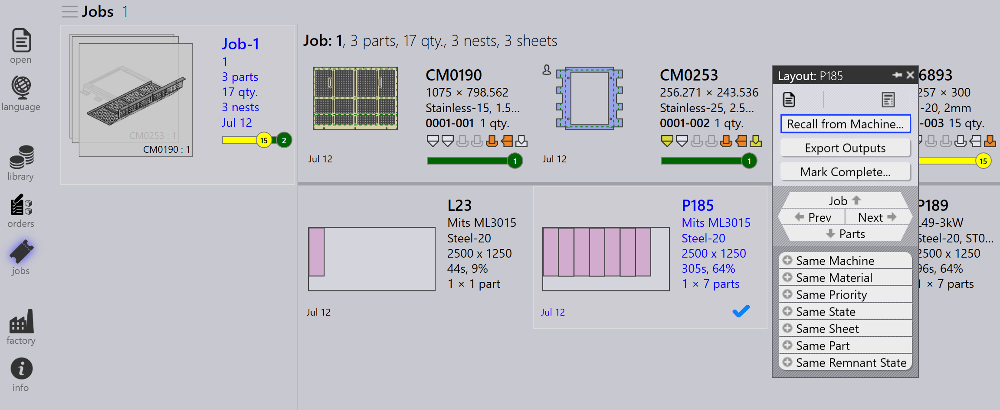
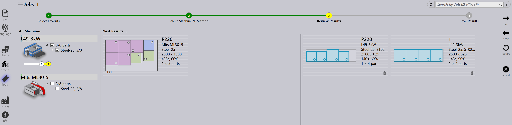

Panel uspořádání
Tato část vysvětluje akce související s uspořádáním, jako jsou Poslat ke stroji…, Znovu vyvolat ze stroje…, Exportovat výstupy, Označit kompletní…, Přidat díly…, Adaptovat / stěsnat…, Rozdělit layouty… a další možnosti používané ke správě instancí uspořádání.

|
|


Poslat ke stroji…
-
Když je hnízdění připraveno (naplněno nebo naléhavě potřeba), můžete jej odeslat na stroj.
-
Klikněte pravým tlačítkem na hnízdění a vyberte Poslat ke stroji….
-
Automaticky se vytvoří složka pojmenovaná podle hnízdění.
-
Výstubní soubory (fxlyt, NC, zpráva, csv) jsou exportovány do umístění výstupu zakázky.
-
Hnízdění odeslaná na stroj jsou zobrazena s modrým zaškrtávacím znaménkem.

| Jakmile jsou vydána, tato hnízdění již nejsou znovu vyzkoušena pro přebalení. |
Znovu vyvolat ze stroje…
-
Pokud výstup vyžaduje validaci nebo aktualizaci (například přidání dalších dílů):
-
Klikněte pravým tlačítkem na exportované uspořádání.
-
Vyberte Znovu vyvolat ze stroje….
-
-
Výstubní soubory a složka (fxlyt, NC, zpráva, csv) jsou odstraněny.
-
Hnízdění se znovu stane upravitelným.
-
Můžete provést změny a znovu jej odeslat na stroj.

Exportovat výstupy
-
Klikněte pravým tlačítkem na jakékoliv uspořádání (hnízdění), které bylo odeslaáno na stroj a klikněte na Exportovat výstupy.

-
Možnost Export Outputs exportuje soubory NC, Report a Layout do příslušných výstuponích složek stroje.
-
Tato možnost regeneruje NC soubor s aktuálními nastaveními jednotek pro uspořádání.
| Export Outputs není k dispozici pro uspořádání, která jsou dokončena a uspořádání, která čekají ve frontě na přebalení. |
Mark complete
-
Jakmile je hnízdění zpracováno na stroji, klikněte pravým tlačítkem na hnízdění a vyberte Označit kompletní….
-
Můžete vybrat více hnízdění a označit je jako dokončená zároveň.
-
Když je hnízdění označeno jako dokončené:
-
Je zašedlé, přesunuto na konec seznamu a zobrazeno se zeleným zaškrtávacím znaménkem.
-
Uspořádání je odstraněno ze seznamu aktivních uspořádání.
-
Stavy dílů a zakázek jsou aktualizovány a zpracovaná množství se přesunou do stavu dokončeno.
-
Výstubní soubory pro toto uspořádání jsou odstraněny z umístění výstupu stroje, aby se zabránilo duplicitnímu použití.

-
Přidat díly…

-
Použijte tuto možnost pro přidání dalších dílů do relativně špatně zabaleného uspořádání. Stejně jako u interaktivního hnízdění je toto možnost řízená průvodcem a lze ji použít na jedno nebo více uspořádání zároveň.
-
TruSmartCAM připojí průvodce přebalením uspořádání v hlavní pracovní oblasti, když je tato možnost použita. Přidržte klávesu Ctrl a vyberte jeden nebo více dílů, které mají být zabaleny do uspořádání, a stiskněte Další.

-
Vybrané díly jsou zobrazeny v dalším kroku s upravitelným sloupcem množství. V případě potřeby aktualizujte množství dílů v poli Update Qty. Klikněte na Další pro pokračování k hnízdění. Poznámka: množství lze pouze zvýšit, nikoli snížit.

-
Všechna uspořádání jsou vyhnízděna samostatně a výsledky hnízdění jsou zobrazeny s nově zabalenými díly umístěnými na nich. Výběrem uspořádání se zobrazí všechny existující díly uspořádání. Výsledek je automaticky zahozn, pokud při přebalení není umístěn žádný nový díl. Uspořádání s více kopiemi může mít po přebalení různé vzory.

Adaptovat / stěsnat…
-
Tento příkaz založený na průvodci lze použít k přizpůsobení uspořádání z jednoho stroje na druhý, když je původní stroj mimo provoz nebo když je třeba vyvážit zátěž stroje.

-
Lze jej použít, když není na skladu list naplánovaný a uspořádání je třeba znovu naplánovat na jiný dostupný list.
-
Můžete slévat uspořádání zabalená na menších listech na větší listy, abyste efektivněji využili materiál.
-
Můžete rozdělit uspořádání zabalená na větších listech na menší listy, pokud nejsou k dispozici zásoby velkých listů.
-
Můžete zvýšit efektivitu balení více uspořádání (dokonce z různých strojů) jejich sločením dohromady.
-
Pro použití vyberte jedno nebo více uspořádání a klikněte na Adaptovat / stěsnat… pro otevření průvodce v pracovní oblasti.

-
Levý panel zobrazuje všechna vybraná uspořádání a panel Díly zobrazuje díly uspořádání.

-
Vyberte cílový stroj a materiál listu, poté klikněte na Další pro provedení přehnízdění.
-
Nové výsledky hnízdění jsou zobrazeny v panelu výsledků.

-
Klikněte na Další pro uložení přizpůsobeného nebo komprimovaného uspořádání.

Rozdělení uspořádání
Možnost Rozdělit layouty… umožňuje rozdělit existující uspořádání na více uspořádání úpravou množství bez nutnosti opětovného provedení nástrojů nebo hnízdění.
Tato funkce je obzvláště užitečná v následujících scénářích:
-
Když potřebujete okamžitě vyrobit část celkového množství, zatímco zbývající množství naplánujete na pozdější výrobu.
-
Když je třeba rozdělit výrobní požadavky mezi více směn nebo dnů pro optimalizaci pracovního postupu a využití prostředků.
-
Když konkrétní stroj je dočasně nedostupný nebo obsazen a potřebujete upravit uspořádání tak, aby vyhovovalo aktuálním výrobním omezením.
Pro rozdělení uspořádání proveďte následující kroky:
-
V zobrazení Layouts vyberte požadované uspořádání.

-
Klikněte na Rozdělit layouty….

-
Zadejte požadovanou hodnotu do Nové kopie.

-
Klikněte na OK.

Vybrané uspořádání je nyní rozděleno na dvě uspořádání s upravenými množstvími.